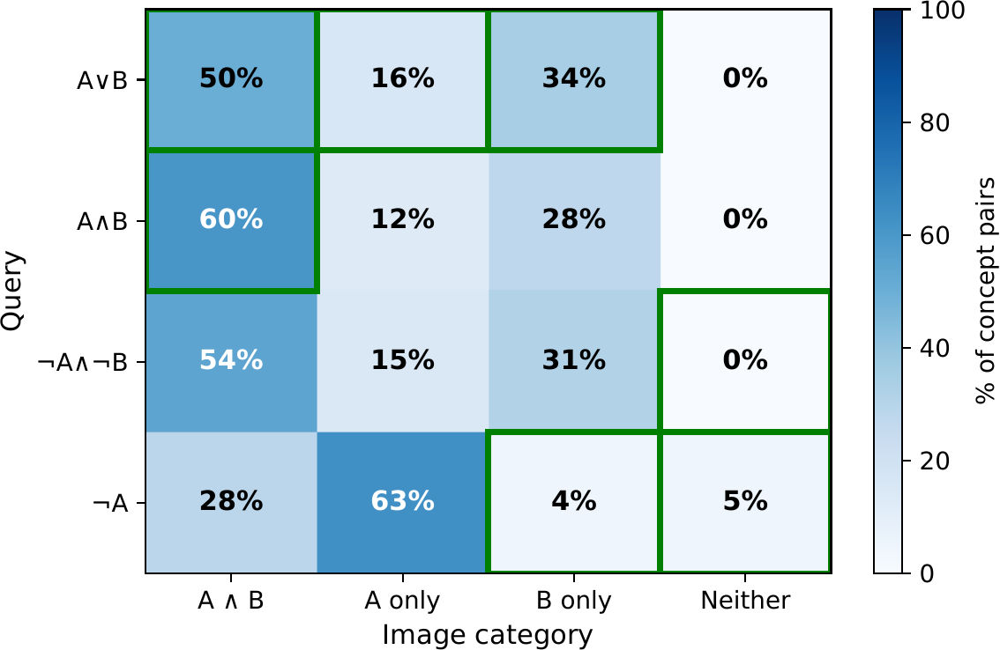
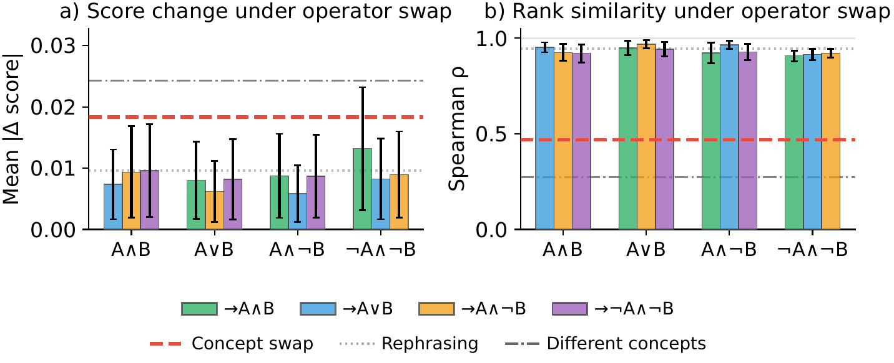

Similarity Is Not Logic:
Factored Inference for Dual-Encoder Vision-Language Models
Abstract
Dual-encoder vision–language models (VLMs) expose a similarity interface that enables zero-shot retrieval but fails compositional constraints: queries like “umbrella and no person” retrieve images containing both, even when concept detection is reliable. We trace this to an interface-level Bag-of-Concepts effect, where similarity scores approximate mean pooling of concept evidence regardless of operators; although operator-dependent signals exist in text embeddings, they are too weak or misaligned to affect rankings. Fine-tuning does not reliably resolve this failure because the dominant bottleneck is how similarity aggregates evidence rather than what encoders represent. We propose factored inference, which separates evidence extraction from constraint execution, and introduce LCSE (Logic-Constrained Score Editing), a training-free method that executes constraints externally using concept scores from frozen encoders. We also introduce FACTOR-Bench, where LCSE achieves 85.5% accuracy versus 73.2% for the best fine-tuned baseline, 90.7% when applied to SigLIP 2, and improves NegBench COCO MCQ accuracy from 27.2% to 65.2% while preserving retrieval performance.
The Problem: Bag-of-Concepts Scoring
Across models we study, image–text similarity behaves like a soft pool of atomic concept evidence: scores track which concepts are mentioned, not how they are combined. Anti-monotone operators (negation, exclusion) are systematically inverted under dot-product scoring even though operator-dependent directions exist in the text embedding. Swapping “and” for “or” barely changes rankings, while swapping concepts changes them substantially.

Holistic scoring inverts anti-monotone operators. $\lnot A \land \lnot B$ should prefer Neither, but never does (0%). $\lnot A$ prefers images containing $A$ for 91% of pairs.

Content words dominate; operators have weak effect.
Swapping and ↔ or preserves rankings
($\rho \approx 0.93$); swapping concepts reorders them ($\rho \approx 0.64$).
Method: Logic-Constrained Score Editing (LCSE)
Factored inference separates evidence extraction from constraint execution. Given a parsed query (concepts, polarities, operator), we extract a per-concept calibrated probability from the frozen VLM via a small template ensemble, then aggregate these probabilities externally according to the operator semantics (harmonic mean for AND, soft-max for OR, arithmetic mean otherwise), with polarity flips for negated concepts.
The LCSE score edit adjusts the original similarity only when the operator implies non-mean aggregation and leaves non-constraint queries untouched:
$s_{\text{LCSE}} \;=\; s_{\text{hol}} \;+\; \frac{1}{\beta}\!\left[\, \mathrm{logit}(p_{\text{logical}}) - \mathrm{logit}(p_{\text{soft}}) \,\right]$
where $s_{\text{hol}}$ is the standard image–text cosine, $p_{\text{logical}}$ is the polarity-adjusted aggregation under the parsed operator, $p_{\text{soft}}$ is the arithmetic mean of raw calibrated concept probabilities, and $\beta$ is the calibration slope. The edit is zero when the query has no operator structure, so standard retrieval performance is preserved by construction.
Results
On FACTOR-Bench (operator split, 1,100 samples), LCSE with frozen CLIP ViT-B/32 reaches 85.5%, versus 58.3% for holistic CLIP and 73.2% for the best fine-tuned baseline. Applied to a stronger backbone (SigLIP 2), LCSE reaches 90.7%. On NegBench COCO MCQ, LCSE lifts SigLIP 2 from 27.2% to 65.2%. Standard retrieval is preserved: COCO R@5 changes by 0.1 point (55.3% → 55.2%) and rank correlation $\rho = 0.999$.
| Method | Backbone | FACTOR-Bench (%) | NegBench MCQ (%) | COCO R@5 (%) |
|---|---|---|---|---|
| Holistic CLIP | ViT-B/32 | 58.3 | 39.3 | 55.3 |
| Best fine-tuned baseline | ViT-B/32 | 73.2 | 56.2 | — |
| LCSE (ours) | ViT-B/32 | 85.5 | 60.3 | 55.2 |
| LCSE (ours) | SigLIP 2 | 90.7 | 65.2 | 73.5 |
Headline results. “Best fine-tuned baseline” is the column-wise best (NegationCLIP on FACTOR-Bench, NegCLIP-NegFull on NegBench MCQ). Full per-operator breakdown, ablations, and stratification analysis in the paper.
FACTOR-Bench
FACTOR-Bench is a diagnostic benchmark that measures whether a vision–language scoring interface executes Boolean operators (negation, conjunction, disjunction, exclusion, NOR) or merely tracks which concepts are mentioned.
- 1,695 samples built from COCO val2017, all OWL-ViT-validated.
- Three splits: operator (1,100; NOT/AND/OR/BUT_NOT/NEITHER), equivalence (450; De Morgan / double-negation / commutativity), and compound (145; 3–4 concepts, mixed polarity).
- Two-alternative forced choice: same concepts, different operators. A model that scores them alike reveals bag-of-concepts behavior.
- Oracle parses embedded in every sample, so evaluation is independent of any text parser.
BibTeX
@inproceedings{alshehri2026similarity,
title = {Similarity Is Not Logic: Factored Inference for Dual-Encoder Vision-Language Models},
author = {Alshehri, Sultan and Yang, Zhantao and Zhang, Han and Savvides, Marios},
booktitle = {International Conference on Machine Learning (ICML)},
year = {2026}
}